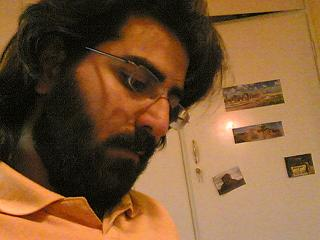

|
|

شوق اولين امضاء / محمد شوراب
چهار شنبه23 آبان 1386
حدود يکسال بود با کمپين آشنا بودم. حدود يکسال بود بيانيه را امضا کرده بودم. حدود يکسال بود همه اخبار کمپين را با دقت دنبال مي کردم. حدود يک سال بود با حوادث تلخ و شيرينش خنده و گريه مي کردم. همه جا از کمپين مي گفتم از بحث هاي خانوادگي گرفته تا بحث هاي دوستانه؛ تا کسي اسمي از زن مي برد بي وقفه نام کمپين را فرياد مي کردم. اما يک چيزي کم داشتم. يک چيزي که براي آن شوق داشتم با خودم کلنجار رفتم تا اين قدرت را پيدا کردم که امضا جمع کنم....
تا اون روز رسيد؛ پا به بوستاني گذاشتم. بيانيه و خودکار از کيفم در آوردم، ضربان قلبم رو به فزوني بود، شوق گرفتن اولين امضاء حرارت تنم را بالا برده بود. به اولين زوجي که رسيدم از کارم استقبال کردند...
چشمان کنجکاو پسران و دختران به کلمات من براي فهميدن قصه کمپين شيرين بود. شيرين تر از آن امضاهايي بود که پشت سر هم جمع مي شدند. امضاي دختر 19 ساله ايي که پدرش اجازه خروج از کشور را به او نمي داد تا امضاي با اشک پسر 25 ساله ايي که مي گفت: مادرم همه زندگي پدرم را ساخت چرا بايد يک هشتم ارث از دارايي پدرم ببرد. يا امضاي دختر جواني با اين سخن همراه بود که اگر شيرين عبادي را ديدي سلام من را به او برسان و بگو که از هنگامي که جايزه صلح نوبل را بردي چند برابر به زن بودنم افتخار مي کنم. يا از همه شيرين تر دختري بود که کاملاً با کمپين آشنا بود و خود براي کمپين امضاء جمع مي کرد اما نمي دانست امضا ها را به چه کسي دهد. يا نشستن پاي دردل هاي پيرمردها و پير زن هايي که سخن از دردهايي مي گفتند که ساليان است کسي پاي آن نشسته.
هميشه فکر مي کردم براي گرفتن اولين امضا اينچنين شوق داشته باشم ولي جمع کردن هر امضاي ديگر برايم شوق انگيز است و هميشه با خود مي گويم هر امضا شور و شوق بسيار در سينه خود نهفته دارد.